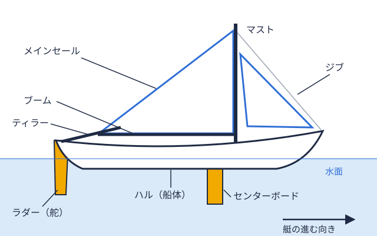

部活運営 2026-11-09
大学ヨット部は大学からどんな補助金を受けられる？ 課外活動助成金・奨励金のしくみ
大学ヨット部の運営費といえば、部費や遠征・合宿費、OB・OG会からの支援やクラウドファンディングが思い浮かびます。しかし、こうした「部内」「部外」の資金源とは別に、所属する大学そのものが公式に設けている「課外活動助成金・補助金制度」も、運動部・文化部を問わず多くの大学で用意されています。この記事では、立教大学・早稲田大学・広島大学・関西学院大学の公開資料をもとに、課外活動助成金の種類と、ヨット部が申請する際に気をつけたいポイントを整理します。
部費・遠征費だけでは足りない運営費を、大学の制度で補う
大学ヨット部は艇の購入・維持費がかさむうえ、水域予選全国大会に出る大学を決めるため、全国9つの地域ごとに行われる予選の大会。から全日本学生ヨット選手権大会まで遠征が続くため、部費だけでは運営費をまかないきれないケースが珍しくありません（部費・購入資金・遠征費の実情も参照）。大学基金への寄付やOB・OG会による継続支援についてはこちらの記事で紹介しましたが、これらの「支援」とは性質が異なる、大学が課外活動全般に向けて用意している助成金・補助金制度も確認しておく価値があります。
大学の課外活動助成金には、いくつかの種類がある
課外活動助成金は大学ごとに制度名も内容も異なりますが、公開資料を見ると、おおむね次の3つの型に分けられます。
① 物品購入・修理修繕を対象にした援助金
立教大学では、公認団体を対象に物品購入援助金の制度があり、2026年度からは対象となる物品の単価基準が税込8万円以上から税込5万円以上に引き下げられ、あわせて修理・修繕費も援助の対象に加わりました。艇の艤装艇にマストや帆、舵などを取り付け、すぐに走れる状態に整えること。 
② 遠征・大会参加などの活動に対する補助金
早稲田大学の課外活動補助金制度は、サークル・団体の企画や大会参加などの直接経費の一部を補助するもので、2026年度からは支給上限額が35万円・20万円・10万円の3コースに改定されています。対象となる活動実績（前年度の直接経費の基準）はコースごとに定められており、継続的に申請を行っている公認サークルほど上位のコースを利用しやすい仕組みになっています。遠征・合宿費の負担が大きい大学ヨット部にとっては、こうした補助金が部費を補う選択肢になり得ます。
③ 大会成績に応じた奨励金
広島大学には、体育系の大会で全国・世界規模の入賞などの成績を収めた団体・個人を対象にした奨励援助の制度があり、団体には上限10万円（海外での大会は上限20万円）、個人には上限5万円が援助されるとされています。関西学院大学の課外活動助成金にも奨励助成金があり、活動実績に応じたポイント制で配分額が決まる仕組みが取られています。全日本学生ヨット選手権大会や水域全国の大学ヨット部を地域ごとに分けた区分。北海道から九州まで全国に9つある。大会での成績が、部の運営費確保にもつながってくる可能性があるというのは、選手にとって励みになる側面でもあります。
ヨット部が申請する際に気をつけたいポイント
これらの制度を活用する際には、いくつか共通して確認しておきたい点があります。
| 確認ポイント | 内容 |
|---|---|
| 公認団体であること | 多くの制度は大学の「公認サークル・公認団体」であることが前提条件になっている |
| 申請のタイミング | 早稲田大学の例のように年数回の申請期間が決まっている制度が多く、事後申請ができない場合がある |
| 対象費目の制約 | 艇体そのものの新規購入や、消耗品・交通費は対象外になりやすく、物品購入・修理修繕・施設利用料など費目ごとに条件が異なる |
| 継続的な活動実績 | 補助金の上限コースや奨励金の配分が、前年度までの活動実績・申請回数に左右される制度もある |
いずれの制度も大学ごとに規程や金額が変わり、年度によって改定されることも多いため、実際に申請する際は、所属大学の学生生活課・学生支援課が公開している最新の募集要項を必ず確認することが欠かせません。
まとめ
大学ヨット部の資金調達は、部費やOB・OG会による継続支援、クラウドファンディング、企業協賛に加えて、大学が課外活動全般に向けて設けている助成金・補助金制度という選択肢もあります。物品購入・修理修繕を対象にした援助金、遠征・大会参加の直接経費を補う補助金、大会成績に応じた奨励金といった複数の型があり、対象条件や上限額は大学ごとに異なります。部費や遠征費の負担に悩む場合は、まず所属大学の学生生活課に、ヨット部として利用できる課外活動助成金の有無を確認してみることをおすすめします。
体育会学生を支援するプラットフォーム「ツナカレ」でも、部活動の協賛募集を無料で掲載できるページを用意しています。大学の助成金制度と並行して、企業との接点を広げる選択肢のひとつとして活用できます（企業協賛の仕組みはこちらの記事も参照してください）。各大学ヨット部の活動拠点や所属水域は学連各水域などの学生ヨット連盟の略称。大学ヨットの大会を主催・運営する団体。ごとに異なるため、興味のある方はヨットマニアの水域一覧ページや関東水域のページ、早稲田大学・立教大学のような大学ディレクトリページから、各部の活動状況を確認してみてください。
出典
PR
遠征費・運営資金でお困りの部活の方へ
協賛募集の掲載は無料。30万円のオープン協賛枠も用意されています。
オフシーズン・引退後に、長期インターンという選択
部活で培った力を実務で試す。16タイプ診断（30秒）で合う企業がわかります。